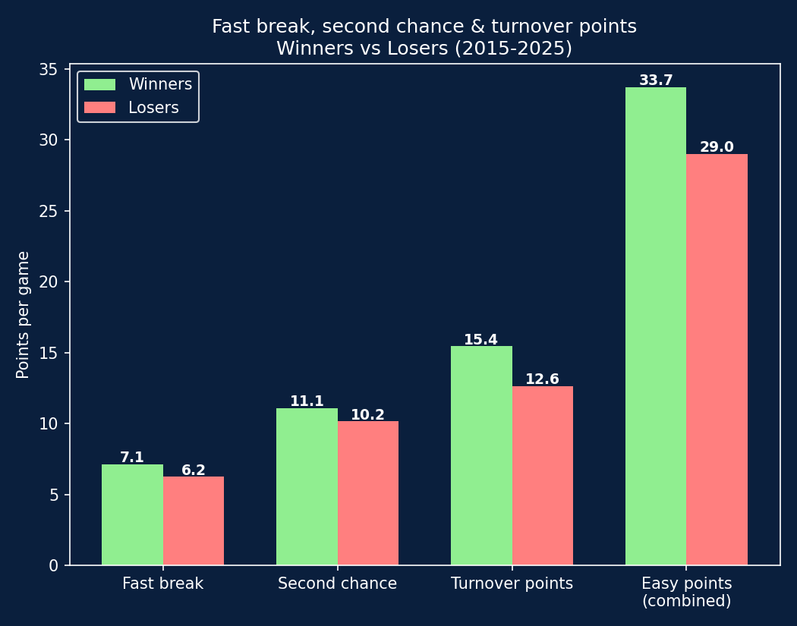
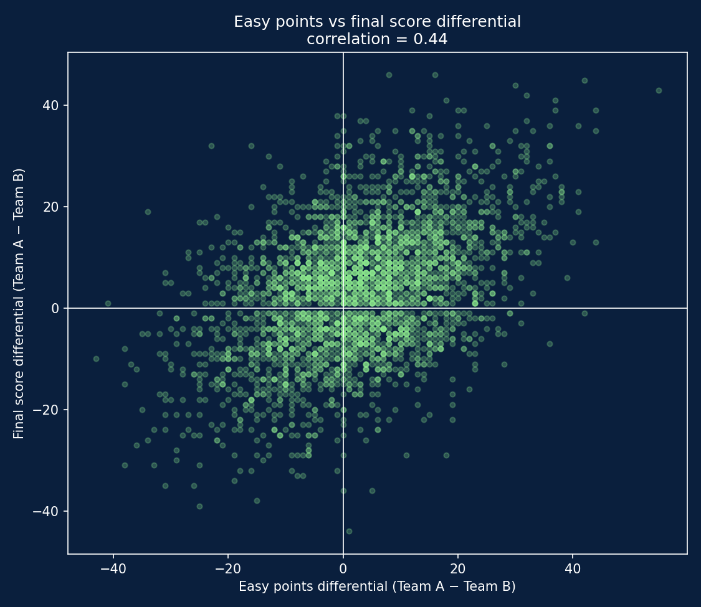

10 seasons of EuroLeague team stats testing whether "easy" points (transition buckets, second chance points, and points off turnovers) really separate winners from losers.
Coaches talk a lot about "easy points": transition buckets, offensive rebounds converted into second attempts, points scored off a forced turnover. The intuition is that these possessions matter more than their raw point value suggests, since they come with little defensive resistance and often reflect a team playing with energy and control.
This project tests that intuition directly using box-score-level data: do teams that generate more easy points actually win more often, and how strong is that relationship really?
"Easy points" is defined here as the sum of three box-score categories: fast break points (scored in transition), second chance points (scored after an offensive rebound), and turnover points (scored off a forced opponent turnover).
The analysis first looked at fast break and second chance points alone, which showed only a weak relationship with winning. Adding turnover points, often the most "unearned" of the three, nearly doubled the correlation with the final result, so the metric used throughout combines all three.

| Fast break | Second chance | Turnover pts | Combined | |
|---|---|---|---|---|
| Winners | 7.14 | 11.09 | 15.44 | 33.68 |
| Losers | 6.24 | 10.15 | 12.62 | 29.01 |
Winners outscore losers in all three categories, but not by the same margin. Turnover points show the largest gap, noticeably bigger than fast break or second chance points on their own. This suggests forcing turnovers and converting them is the single most discriminating habit among the three.

The correlation between easy points differential and final score differential sits at 0.44, a moderate relationship. The team with more combined easy points wins the game 64.4% of the time (163 games with an exact tie in easy points excluded). Well above a coin flip, but still: more than 1 in 3 games are won by the team with fewer easy points.